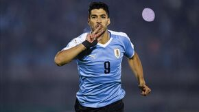

Luis Suárez debutó en la selección Uruguaya un 7 de febrero de 2007. Desde ese momento no paró de hacer goles con la celeste, ha disputado un total de 134 partidos, convirtiéndose en el goleador histórico de la selección con 68 goles. Está próximo a cumplir un sueño en Qatar 2022, jugando su cuarto mundial. A nivel grupal logró levantar el título de la Copa América 2011 realizada en Agentina, además de conseguir el cuarto puesto en el mundial de Sudáfrica 2010.
